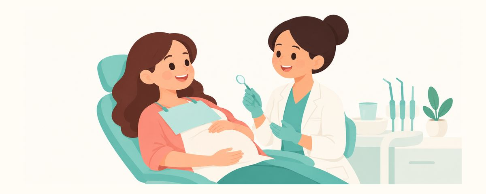

Đi nha sĩ khi mang thai là an toàn: hướng dẫn về khám răng, gây tê và chụp X-quang
Khám răng và điều trị cần thiết đều an toàn khi mang thai. Tam cá nguyệt thứ hai (tuần 14–27) là lúc dễ chịu nhất; cùng với gây tê, X-quang và điều cần báo nha sĩ.
Tóm tắt nhanh
- Khám răng và điều trị cần thiết đều an toàn khi mang thai
- Tuần 14–27 là lúc đi khám dễ chịu nhất
- Chỉ chụp X-quang khi thực sự cần, và liều rất thấp
Khi biết mình mang thai, nhiều mẹ nghĩ chuyện đi nha sĩ nên để sau khi sinh. Nhưng khám răng và các điều trị cần thiết vẫn có thể thực hiện khi mang thai, và trì hoãn lại thường khiến mọi chuyện nặng nề hơn. Bài viết này giải thích nên đi khám lúc nào, gây tê và chụp X-quang có an toàn không, và mẹ cần báo những gì khi đi khám.
Đi nha sĩ khi mang thai vẫn an toàn
Khám răng, cạo vôi răng, trám răng sâu và điều trị nướu đều có thể thực hiện an toàn khi mang thai. Khi mang thai, thay đổi nội tiết tố khiến nướu dễ bị viêm, và ốm nghén hay thói quen ăn vặt cũng có thể gây sâu răng. Nếu trì hoãn, tình trạng viêm sẽ nặng hơn và cuối cùng cần điều trị lớn hơn, còn cơn đau và căng thẳng thì khó khăn cho cả mẹ và bé.
Thời điểm đi nha sĩ dễ chịu nhất là tam cá nguyệt thứ hai (tuần 14–27). Ở giai đoạn đầu, ốm nghén khiến mẹ khó há miệng lâu, còn ở giai đoạn cuối, bụng to khiến mẹ khó nằm lâu trên ghế. Đến giữa thai kỳ, ốm nghén thường đã giảm và bụng chưa quá to, nên việc khám chữa dễ dàng hơn. Nếu còn điều trị dang dở, mẹ nên hoàn tất trong giai đoạn này. Sau khi bé chào đời, mẹ sẽ khó sắp xếp thời gian đi nha sĩ hơn nhiều, nên bây giờ là cơ hội tốt để chăm sóc răng miệng của mẹ.
Thuốc gây tê tại chỗ cũng có thể dùng khi mang thai. Được gây tê để điều trị thoải mái sẽ đỡ gánh nặng cho cơ thể mẹ hơn là cố chịu đau.
X-quang chỉ chụp khi thực sự cần. Liều bức xạ của X-quang răng rất thấp, nên nếu cần cho chẩn đoán thì vẫn có thể chụp khi mang thai. Hướng dẫn hiện hành của Hoa Kỳ (ADA 2024) cho biết không cần dùng thường quy áo chì và yếm che tuyến giáp, kể cả với phụ nữ mang thai. Tuy nhiên, một số cơ sở hoặc quốc gia vẫn có quy định dùng đồ che chắn, vì vậy mẹ cứ làm theo hướng dẫn của nha khoa mình đang khám.
Khi đi khám, mẹ hãy chuẩn bị như thế này
Từ lúc đặt lịch đến khi khám, mẹ hãy lần lượt lưu ý những điều sau:
- Khi đặt lịch, hãy cho phòng khám biết mẹ đang mang thai và tuần thai.
- Ghi lại danh sách thuốc và thực phẩm bổ sung đang dùng. Nếu bác sĩ sản khoa có dặn điều gì cần lưu ý, hãy báo luôn.
- Nếu nha sĩ nói cần trám răng, cạo vôi răng hay điều trị nướu, đừng trì hoãn mà hãy làm trong tam cá nguyệt thứ hai.
- Nếu nha sĩ đề nghị chụp X-quang, mẹ cứ thoải mái hỏi vì sao cần chụp. Chụp những phim thật sự cần thiết là cách để không bỏ sót chẩn đoán.
- Nếu thấy khó chịu trong lúc khám, hãy giơ tay và đề nghị nghỉ một chút.
Khi bụng to dần, nằm ngửa có thể khiến tử cung đè lên mạch máu lớn, làm mẹ chóng mặt hoặc khó thở. Lúc đó đừng cố chịu mà hãy nói ngay. Nâng ghế lên một chút hoặc nghiêng người sang trái một chút thường sẽ giúp mẹ dễ chịu ngay.
Sai lầm các mẹ hay mắc là nghĩ "vì đang mang thai" nên cố chịu đựng chiếc răng đau. Đau hay sưng không tự khỏi khi chờ đợi, và để lâu có thể phải điều trị lớn hơn.
Câu hỏi thường gặp
Mẹ đang ở giai đoạn đầu thai kỳ mà răng đau quá. Có phải đợi đến tam cá nguyệt thứ hai không?
Không. Nếu đau hay sưng, hãy đến nha sĩ ngay, dù đang mang thai tuần thứ mấy. Có thể điều trị cấp cứu ở bất kỳ giai đoạn nào của thai kỳ.
Thuốc gây tê ở nha sĩ có hại cho bé không?
Thuốc gây tê tại chỗ có thể dùng khi mang thai. Khi mẹ báo đang mang thai và tuần thai, nha sĩ sẽ điều trị phù hợp.
Nha sĩ không cho mẹ mặc áo chì, như vậy có sao không?
Hướng dẫn hiện hành của Hoa Kỳ cho biết khi chụp X-quang răng, không cần dùng thường quy áo chì và yếm che tuyến giáp, kể cả với phụ nữ mang thai. Mỗi cơ sở và mỗi quốc gia có quy định khác nhau nên có nơi vẫn dùng đồ che chắn; nếu thắc mắc, mẹ cứ hỏi ngay lúc đó.
Mẹ có cạo vôi răng được không?
Được, cạo vôi răng và điều trị nướu đều an toàn khi mang thai. Việc này giúp ích rất nhiều để làm dịu tình trạng viêm nướu khi mang thai.
Mẹ đã chụp X-quang răng khi chưa biết mình mang thai.
Liều bức xạ của X-quang răng rất thấp, nên đây là loại phim có thể chụp khi mang thai nếu cần. Dù vậy, nếu vẫn lo lắng, mẹ hãy báo và trao đổi với bác sĩ sản khoa.
Những lúc này, mẹ hãy đi nha sĩ
- Răng đau hoặc đau khi nhai
- Nướu cứ sưng và chảy máu
- Mặt hoặc nướu bị sưng (đi ngay, dù đang mang thai tuần thứ mấy)
- Mẹ còn răng sâu chưa điều trị hoặc điều trị còn dang dở
- Từ khi mang thai, mẹ chưa đi khám răng
Nhận đúng lúc cần
Ba mẹ chỉ cần nhập ngày sinh của bé (hoặc ngày dự sinh) vào ứng dụng Lịch Răng, các bài viết này sẽ đến dưới dạng lời nhắc đúng lúc cần. Miễn phí, không cần đăng ký.
Nguồn
Thông tin trong bài viết này chỉ nhằm mục đích giáo dục chung và không thay thế việc khám chữa răng chuyên nghiệp. Hãy trao đổi với nha sĩ về tình trạng của con bạn.